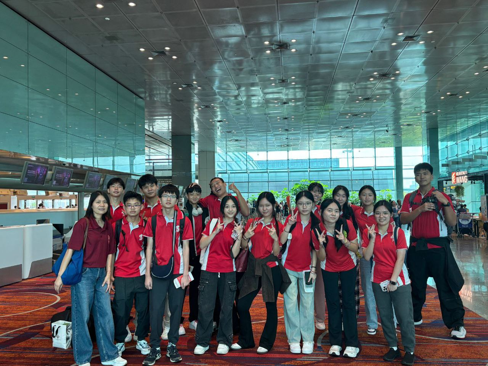
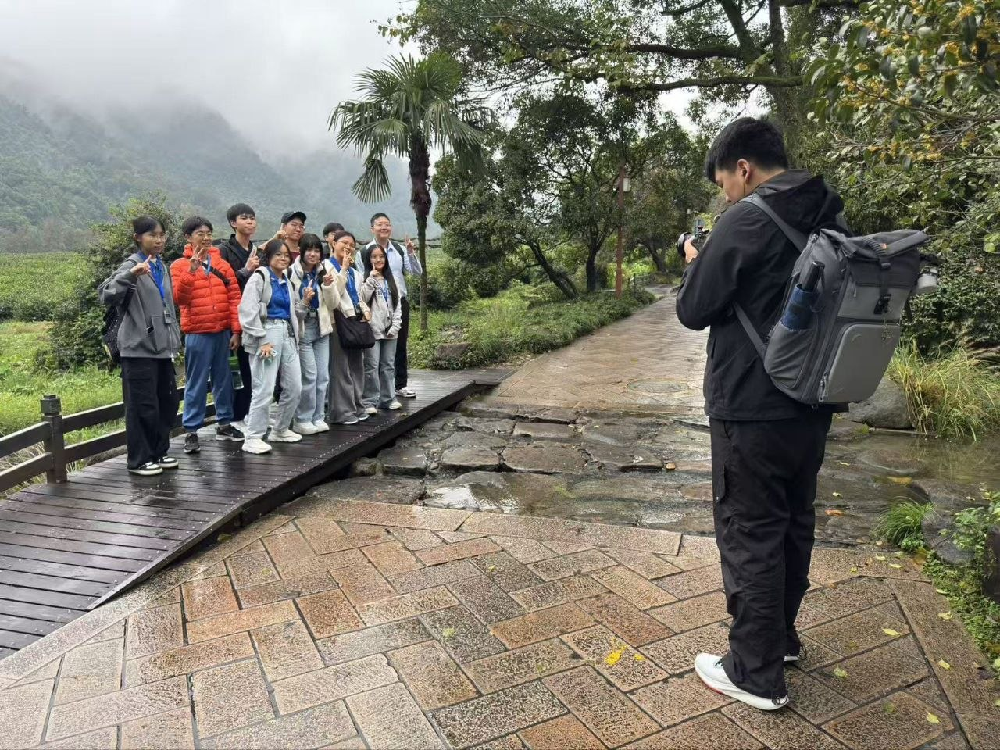
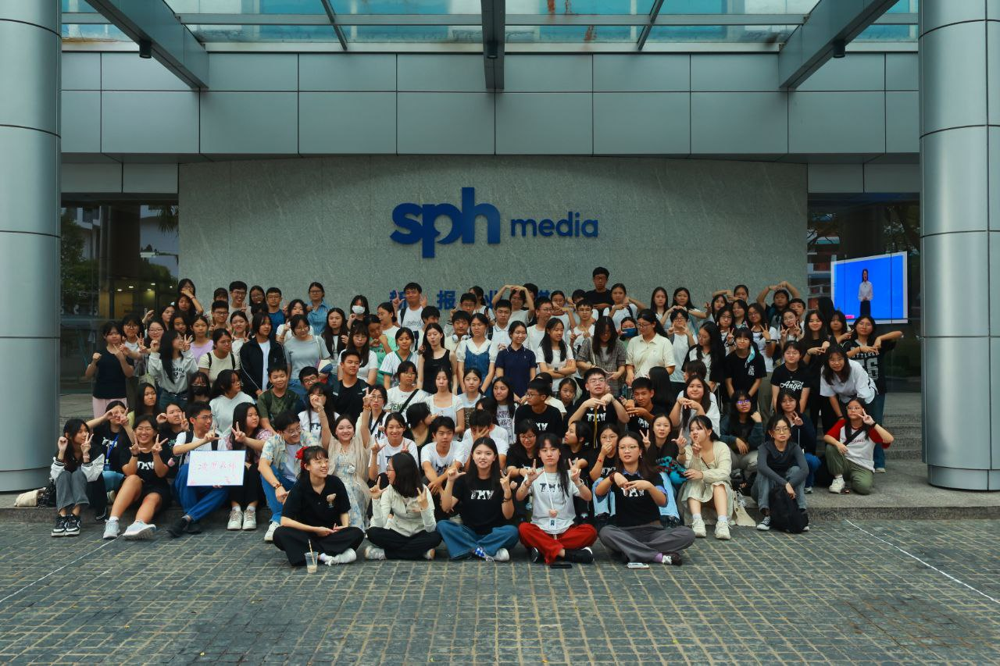
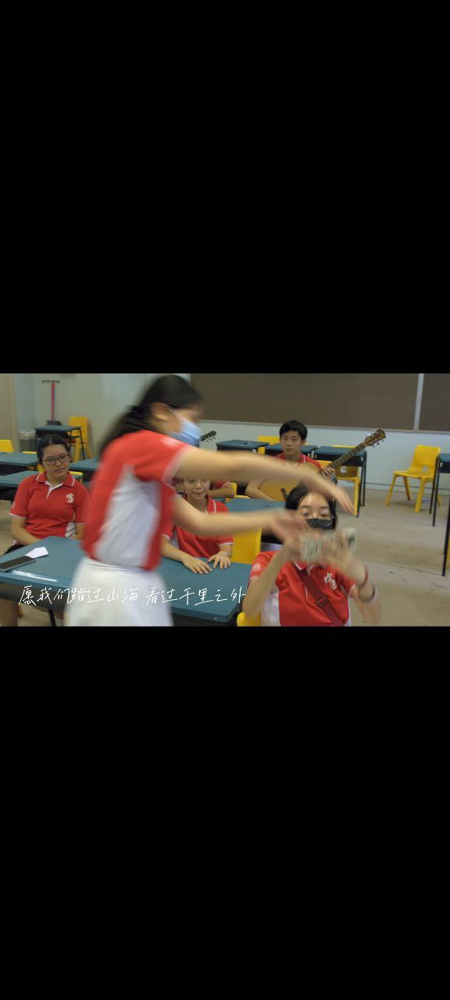
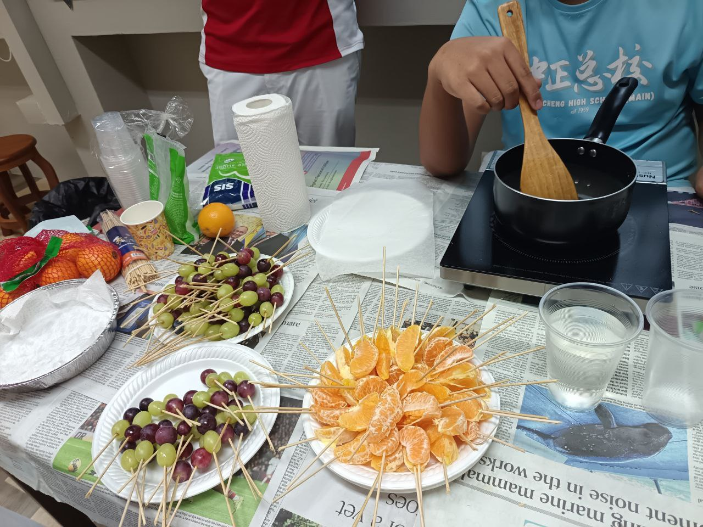
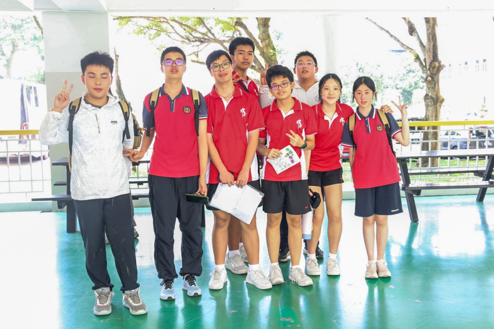

Zixuan
Over four years at Chung Cheng High School (Main), I have developed a practice centred on visual storytelling — using photography, videography, and editorial work to document, interpret, and communicate. As Vice Chair of the CLEP Society (悦习社), I coordinate teams across events ranging from orientation programmes to recruitment campaigns. As a student correspondent for Lianhe Zaobao, I learned to tell stories that serve the public record. These experiences have taught me that meaningful communication requires both technical skill and a genuine curiosity about the people and contexts you are documenting.
在中正中学（总校）的四年，我逐渐建立起以视觉叙事为核心的创作实践——用摄影、视频与编辑工作来记录、诠释、传递。身为悦习社副主席，我统筹各组事务，从迎新活动到招生宣传；作为联合早报学生通讯员，我学到的是如何讲述服务于公众记录的故事。这些经历让我明白：有意义的表达，需要技术能力，也需要对你所记录的人和语境保持真实的好奇。
奖项
海外浸濡
影像作品
年

CLEP Music Film拍摄现场

Taiwan Immersion台湾浸濡

通讯员 Correspondent采访现场
 Chinese Drama
Chinese DramaARTFEST 演出
Selected Projects
做过的事，留下的痕迹 · Projects that left something behind

Produced a promotional video for CLEP society recruitment, managing both the creative concept development and the full post-production pipeline independently. The brief required communicating the value of the CLEP programme to an audience of prospective members — a task that demanded clarity of message as much as technical execution.
The challenge: recruitment videos for academic programmes tend to look identical. This one needed to stand out while remaining credible. Concept discussions were collaborative; post-production execution was handled independently.
宣传视频不只是"好看"，是要让目标观众真的想加入。策划是集体的，后期是自己扛的。
Gold Award in the 鲜新闻 (Fresh News) category at the 我来报 national student journalism competition. The format required completing the full journalism pipeline — on-site interviews, scriptwriting, video production, and final submission — within a real competition timeline with no retakes.
This was not a controlled school project. The interview subjects, story angle, and editorial decisions all had to be made on the ground, in real time. The gold award was the outcome; the process was the more significant education.
采访、脚本、视频制作——全流程压缩在真实的竞争时限内。拿了金奖，但过程本身才是最有价值的部分。

Served as Memories Committee Leader for the Taiwan Immersion programme — responsible for the complete visual documentation of the trip, including coordinating a team of photographers to ensure comprehensive, non-repetitive coverage across all activities.
The role involved real-time decision-making: assigning coverage responsibilities, managing equipment contingencies (including a mid-trip battery failure on the busiest shooting day), and ensuring that 30+ participants would have a thorough visual record of their experience. Documentation spanned both still photography and video production.
不只是"拍照片"，是带着整个摄影团队，对整个团队的视觉记录质量负责。
Responsible for all video production during the Hangzhou Immersion programme — from pre-trip planning and shot lists through to on-location filming and final edited documentation. Where the Taiwan immersion was primarily about coordination, Hangzhou marked a shift toward authorial intent: more deliberate framing, clearer editorial perspective, and a more developed approach to documenting culture as something lived rather than observed.
Hangzhou's particular dynamic — Song Dynasty gardens, WeChat Pay, drones over West Lake — provided a productive tension for thinking about tradition, modernity, and how visual documentation can hold both.
杭州这趟更像是一次有主张的视觉创作，而不只是记录。如何同时呈现一个城市的传统与现代，是这次作品的核心问题。

Go Deeper
每一页都有完整的故事 · Every page has a full story
Vice Chair, music film, promotional video, scholarship. The full record of involvement in the Chinese Language Elective Programme — from participant to society leader.
副主席、社歌MV、宣传视频、奖学金——从学员到领导者的完整记录。
Taiwan and Hangzhou immersion programmes, plus the Chongqing student exchange. Visual documentation, team coordination, and cross-cultural engagement across two immersion trips and one buddy exchange.
Four years in Chinese Drama — from props crew to Quartermaster to SYF stage. Includes the CCA resource website built to preserve institutional knowledge for future batches.
四年华文话剧——从道具组到SYF舞台，以及为后辈建立的资源网站。
38th batch Lianhe Zaobao student photojournalist. Best Group Photo Award. ZB Info TV. The programme that formalised the distinction between photography as expression and photography as journalism.
第38届联合早报通讯员，最佳团体照片奖，彻底改变了我对摄影的理解。
Complete awards list, a four-year growth timeline, Science Development Programme, and community service record. The full overview.
完整奖项列表、四年成长时间线、科学发展计划及服务学习记录。
For collaboration enquiries, programme applications, or any questions about the work documented here.
合作意向、项目咨询，或任何关于作品集的问题，欢迎联络。